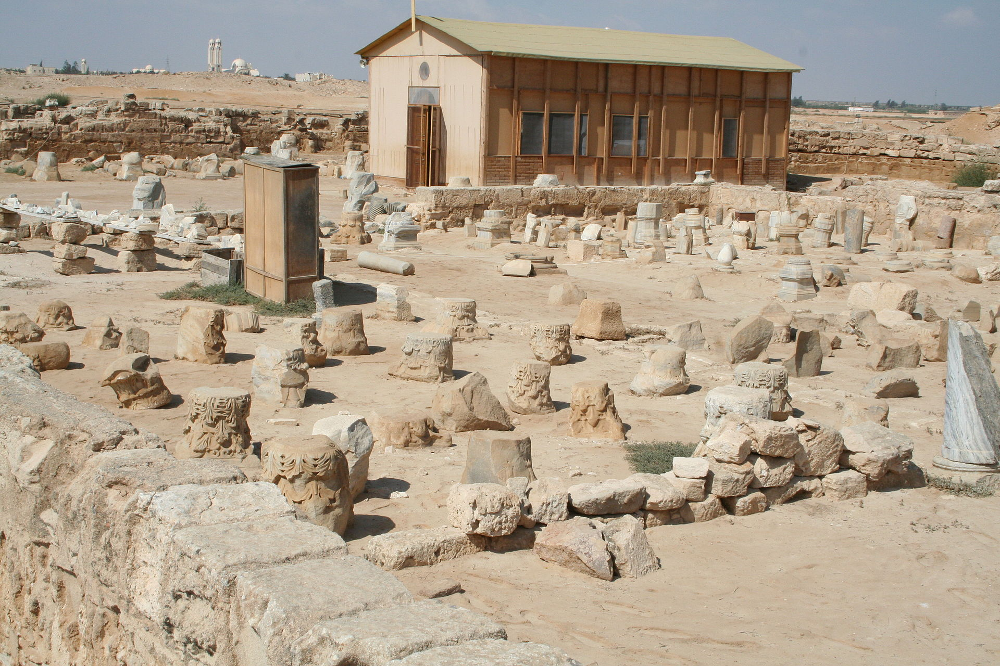
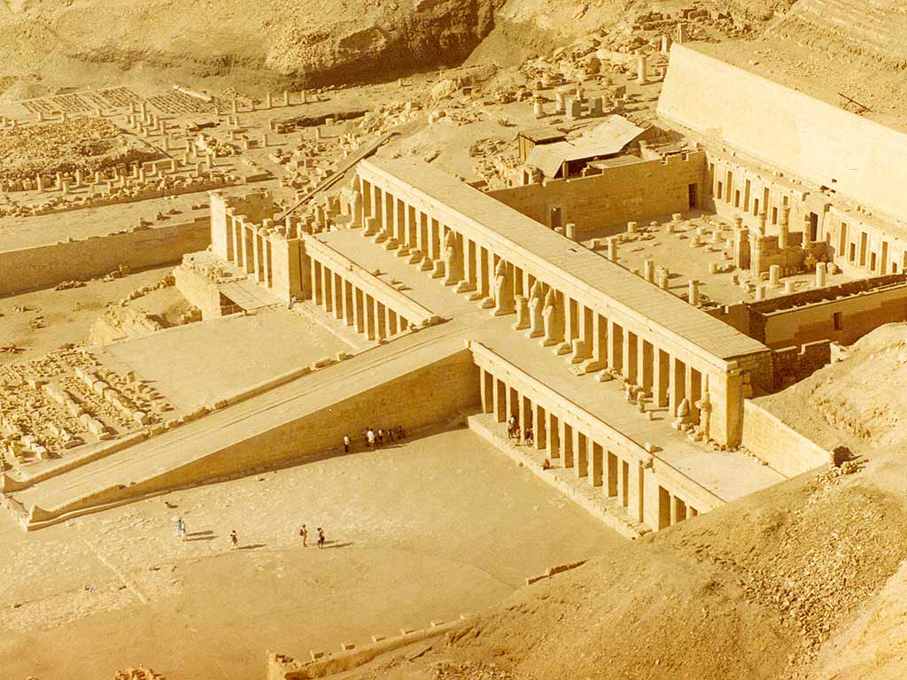
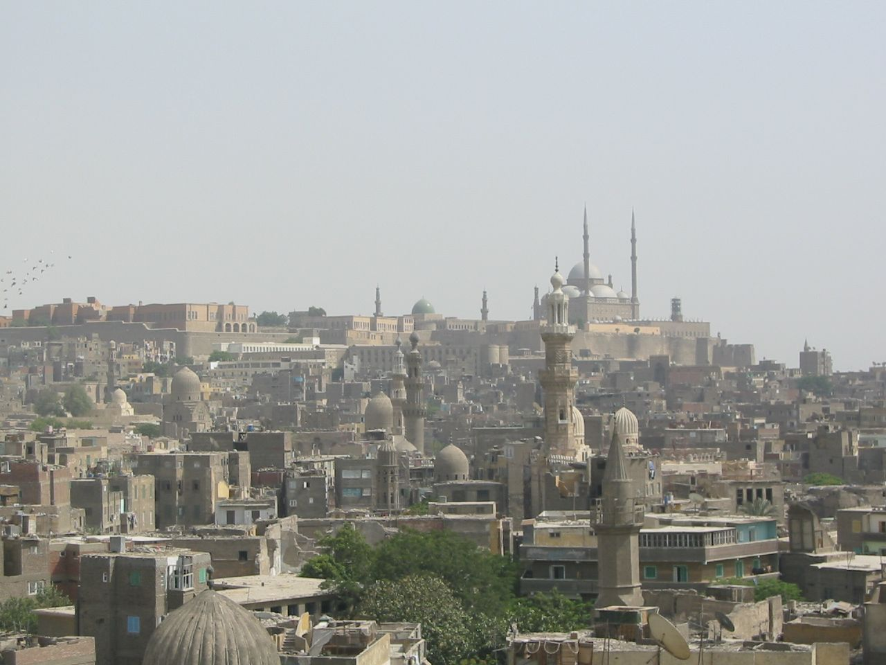
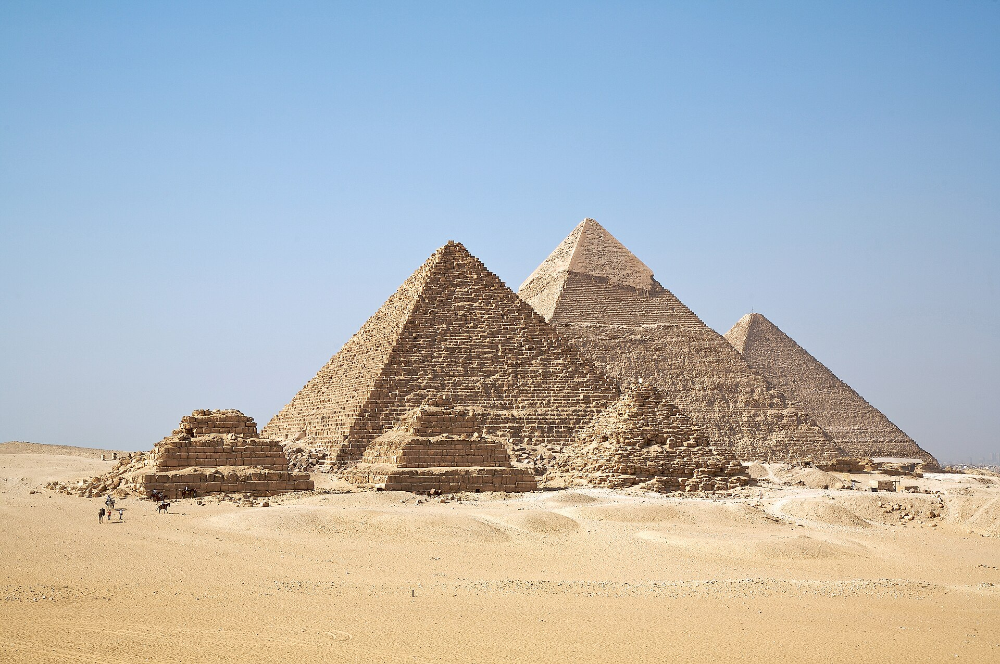
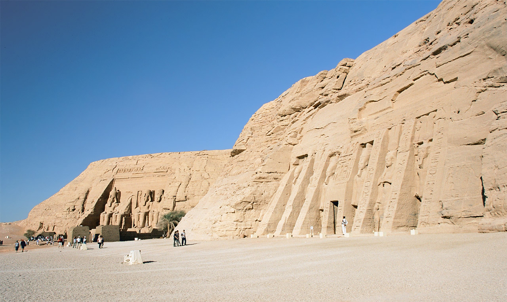
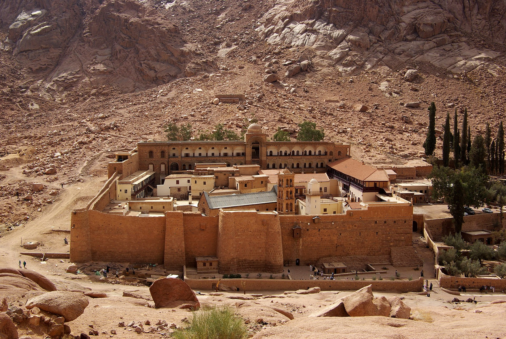

Egypt, a cradle of ancient civilizations, is home to a plethora of awe-inspiring monuments and landmarks that stand as testaments to its rich history.
Recognizing the immense value and significance of these treasures, UNESCO has designated several sites in Egypt as World Heritage Sites.
Please follow the map to catch a glimpse of the grandeur and ingenuity of ancient Egyptian civilization.
Abu Mena
Alexandria Governorate
The ruins of the former Christian holy city contain a church, a baptistery, basilicas, public buildings, streets, monasteries, houses, and workshops, and were built over the tomb of Menas of Alexandria.

Ancient Thebes with its Necropolis
Luxor Governorate
The former capital of Egypt and the city of Amun, Thebes contains temples and palaces at Karnak and Luxor, as well as the necropolises at the Valley of the Kings and the Valley of the Queens, bearing witness to the height of the Egyptian civilization.

Historic Cairo
Cairo Governorate
One of the world's oldest Islamic cities and in the middle of urban Cairo, the site dates from the 10th century and reached its golden age in the 14th century. It contains mosques, madrasah, hammams and fountains.

Memphis and its Necropolis – the Pyramid Fields from Giza to Dahshur
Giza Governorate
The capital of the Old Kingdom of Egypt has some extraordinary funerary monuments, including rock tombs, ornate mastabas, temples and pyramids. In ancient times, the site was considered one of the Seven Wonders of the World.

Nubian Monuments from Abu Simbel to Philae
Aswan Governorate
Located along the Nile, the site contains monuments such as the Temple of Ramesses II at Abu Simbel and the Sanctuary of Isis at Philae, saved from being submerged by Lake Nasser as a result of the construction of the Aswan Dam.

Saint Catherine Area
South Sinai Governorate
The orthodox monastery of Saint Catherine is among the oldest Christian monasteries still in function. Dating from the 6th century, it is positioned near Mount Horeb where, according to the Old Testament, Moses received the Tablets of the Law. The region is sacred for Christians, Muslims and Jews.

Wadi Al-Hitan (Whale Valley)
Faiyum Governorate
Located in western Egypt, Wadi Al-Hitan contains fossil remains of the now extinct Archaeoceti, mapping the evolution of the whales from a land-based to an aquatic mammal.